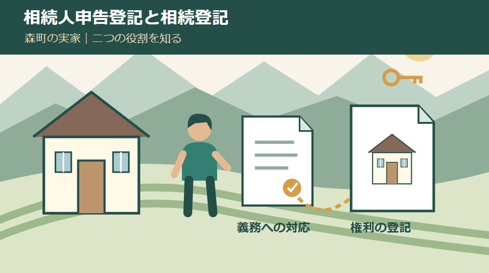
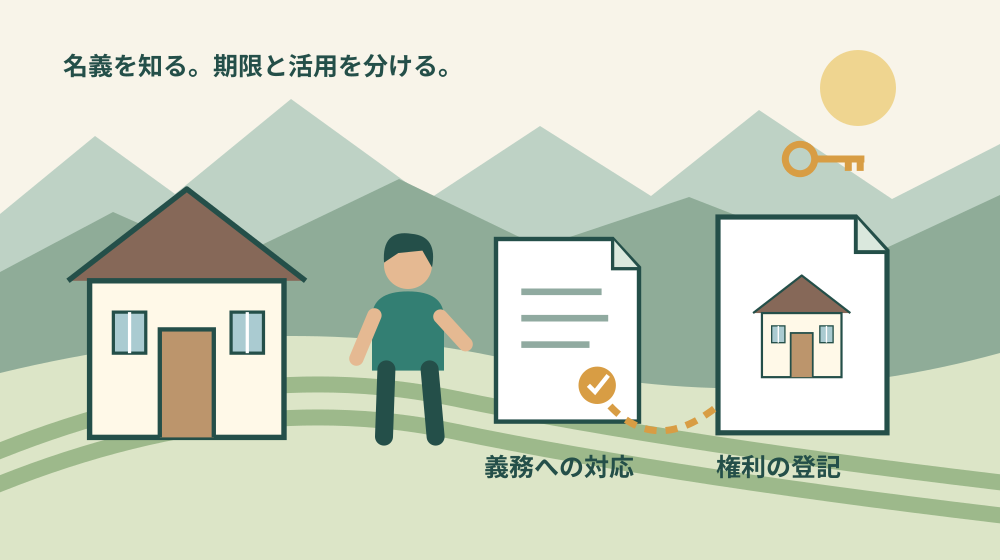
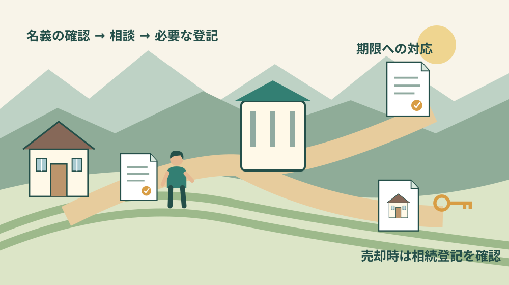

空き家・実家・相続
相続人申告登記と相続登記の違い｜森町の実家

Q. 家族の話がまとまらない。相続人申告登記だけで足りる？
A. 相続人申告登記は、期限内の相続登記が難しい場合に義務を簡易に履行する仕組みです。権利関係を公示する相続登記とは異なり、売却には別途相続登記が必要です。2024年4月1日前に相続を知った不動産は2027年3月31日が期限。今日は土地と建物の登記名義を確認し、個別の手続を法務局や司法書士へ相談してください。
家族の話し合いと登記の期限を、同じ箱に入れない
森町の実家を誰が引き継ぐか。その話には、草刈りや墓参り、固定資産税の支払いを続けてきた家族の負担が重なります。遠方から通う人と町内で見守る人では、見えている維持費も違います。話がまとまらないことを、単に準備不足とは片付けられません。
私は大石浩之（磐田市／不動産業）です。この記事では、相続人申告登記と相続登記の役割を分けます。売るか残すかを決める時間と、登記の義務に対応する時間を整理し、家族の調整が続く間にも動ける入口を示します。
制度の説明は2026年9月29日に法務省の原文で確認しました。以下の段取りや家族への伝え方は私の提案です。相続関係、遺言、遺産分割の進み具合によって必要な申請は変わるため、個別の判断は法務局や司法書士に確認してください。
相続人申告登記と相続登記は、記録する内容が違う
相続人申告登記は、自分が登記記録上の所有者の相続人であることなどを申し出る手続です。法務省は、期限内に相続登記が難しい場合に、申請義務を簡易に履行できる仕組みと説明しています。登記官の審査後、申出をした人の氏名・住所などが付記されます。
相続登記は、相続による所有権の移転を登記へ反映する手続です。遺産分割で誰が取得したか、法定相続分による共有なのかなど、申請の内容に応じて権利関係を示します。どちらも登記という名前ですが、同じ完成形へ至る二種類の申請ではありません。
比較の軸は、手軽さより「何を済ませたいか」です。相続人申告登記は、すぐに通常の相続登記を進められない人の義務への対応です。相続登記は、取得した権利を登記へ反映するために進めます。費用だけで優劣を付けると、目的が抜け落ちます。
法務省は、相続人申告登記が不動産の権利関係を公示する登記ではないと明記しています。そのため、相続した実家を売却する場合や抵当権を設定する場合は、別途、相続登記が必要です。申告が済んだという事実だけで、引渡しの準備まで完了したとは扱えません。
家族への説明では「期限への対応は進めた。売却に必要な登記は別に残る」と分けると伝わります。私は、申告済みの書類に「全部完了」と大きく書くことは勧めません。何が済み、何が未了なのかを一緒に残した方が、次の担当者が迷いません。

2027年3月31日は、過去の相続にも関係する
法務省の「相続登記には期限があります」は、2024年4月1日より前に相続したことを知った不動産も対象にしています。該当する不動産は2027年3月31日までに相続登記が必要です。昔の相続だから義務化と関係がない、とは考えないでください。
通常は、自分のために相続が始まったことと、不動産の所有権を取得したことを知った日から3年以内という期限を確認します。亡くなった日だけで一律に計算するのではなく、その物件を取得したことをいつ知ったかも確認対象になります。
2027年3月31日を、全員に共通する唯一の締切と読み替えないでください。2024年4月1日以降に取得を知った場合や、遺産分割が後で成立した場合には、その事情に応じた起点を調べます。家の書類には死亡日、取得を知った日、分割成立日を別欄で残します。
法務省のチラシは、相続人申告登記の後に遺産分割がまとまった場合、遺産分割の日から3年以内に結果に基づく相続登記を行う流れも示しています。相続人申告登記によって、遺産分割後の申請義務まで履行できるわけではありません。
概要資料ページにある2026年3月17日は、期限案内チラシの更新日です。相続登記の義務化が始まった2024年4月1日とは別の日付です。資料の更新を新制度の開始と取り違えないよう、家族へ転送するメモにも「資料更新日」と書き添えます。
相続した物件をまだ拾い切れていない場合は、所有不動産記録証明制度の記事も確認材料になります。ただし、証明書を取得しただけでは相続登記の申請は終わりません。物件を探す工程と名義を動かす工程を分けます。
相続人申告登記で準備する書類と費用
法務省の申出手続では、特定の相続人が単独で申し出られると案内しています。他の相続人の分を代理して申し出ることもできますが、自分一人の申出で家族全員の義務が当然に済むわけではありません。誰の分を申し出るのかを明確にします。
基本書類は、申出書、登記名義人の相続人であることが分かる戸籍関係書類、申出人の住所を証する情報です。代理人が手続する場合には委任状も加わります。必要な戸籍は、亡くなった人と申出人の関係によって異なります。
法務省は、申出に押印・電子署名が不要で、登録免許税もかからないと説明しています。ただし、戸籍等の取得費や郵送費、専門家へ依頼する場合の費用まで一律に無料という意味ではありません。「税が不要」と「支出がゼロ」を分けて予算を考えます。
住所情報には提出を省略できる条件があります。申出書に住民票上の氏名のふりがな等と生年月日を記載し、登記所が住基ネットで住所を確認する仕組みです。国内に住所がなく住民票に記載のない人は省略できないため、公式案内の条件を確認します。
被相続人の本籍と登記記録上の住所が異なる場合には、同じ人であることを示す住民票の除票や戸籍の附票の写し等が必要になります。戸籍だけ集めて止まっているなら、名義人の住所の履歴も相談時に伝えると、確認すべき資料が具体的になります。
法定相続情報一覧図の写しや番号を利用できる場合もあります。法定相続情報一覧図と戸籍の比較は、証明に使う書類を選ぶための記事です。この記事の登記方法の比較とは問いが違うため、必要な工程に合わせて読み分けてください。
森町への相続人代表者の届出は、法務局の登記と別
森町の固定資産税FAQは、相続登記が完了するまでの間、税の書類を受け取る相続人代表者を決め、指定届を提出するよう案内しています。町へ届出をしたという記憶があっても、それが法務局への相続登記だったかは書類で確認します。
相続人代表者指定届、相続人申告登記、相続登記は、名前が似ていても役割が違います。税の通知の受取先を決める手続、自分が相続人だと申し出る手続、権利を登記へ反映する手続です。届出先も目的も一枚の一覧で分けておくと混乱を減らせます。
固定資産税を毎年払ってきた家族の役割は、決して小さくありません。その支払いの継続と登記名義の確認は別々に扱います。税の通知の宛名だけで所有権の登記が済んでいると決めず、土地と建物それぞれの登記事項を確かめます。
税の書類を受け取る段取りは、相続人代表者指定届の記事で整理しています。登記の相談と並行して、町からの連絡が届く状態も保つ。遠方に住む家族が現地へ行けなくても、郵便物の受取や資料整理は担当できます。
良い点｜分割の結論を急がず、義務への入口を持てる
相続人申告登記の良い点は、家族全員で遺産分割をまとめる作業と、申請義務への対応を切り分けられることです。法務省が単独の申出を認める仕組みは、調整が長引く家族にも具体的な入口を用意しています。
私は、期限が迫ったからという理由だけで、家族の納得が追いつかない売却へ話を進める必要はないと考えます。今日の課題が登記の義務なら、まず義務をどう履行するかを専門家へ聞く。売却価格の話を同時に始めなくても、相談は成立します。
法定相続人の範囲や法定相続分の割合を確定する負担を軽くできる点も、法務省が挙げる特徴です。遠方の家族との連絡や戸籍収集が難しいとき、何が省け、何が必要かを確認する余地があります。簡易という言葉を、確認なしで進められる意味にはしません。
家族の担当を分けやすい点も、私は利点だと考えます。書類を探す人、法務局へ質問する人、相談結果を共有する人は同じでなくて構いません。現地の草刈りを担ってきた一人へ、登記の調査まで全部重ねない段取りにできます。
注文したい点｜「申告済み」の一言では残る仕事が見えない
相続人申告登記の案内で注意したいのは、義務を履行したという説明と、権利の登記が完成したという説明が混ざることです。家族間の引継ぎでは、売却や抵当権設定に別途相続登記が必要だという点まで伝える必要があります。
私は、制度の説明には「できること」と同じ場所に「この後に残ること」を置いてほしいと考えます。申出を終えた人が家族へ報告する場面こそ、未了の仕事を記録する機会です。完了通知や受付に関する資料と一緒に、次の相談事項も保管します。
遺産分割が既に成立している場合には、申告で代わりに済ませようとしないでください。法務省は遺産分割に基づく相続登記の義務を申告登記では履行できないとしています。協議書や遺言の有無を、手続選びの最初に確認します。
森町の空き家・空き地バンクは情報提供の制度で、町が交渉や契約、物件管理を引き受ける仕組みではありません。登記の整理後に活用を相談する際も、相続人間の合意や契約の準備は別に残ります。登録相談をしただけで売却可能と判断しないようにします。

対案・結論｜今日は土地と建物の登記名義を確認する
相続した森町の実家について、今日行う一歩は、土地と建物の登記名義を確認することです。手元の権利証や課税明細を探し、物件の所在・地番・家屋番号を整理します。古い書類しかなければ、その日付も書き、現在の登記事項の確認につなげます。
「実家一軒」を一つの名義だと思い込まないため、土地と建物は行を分けます。敷地が複数筆ある場合や、別の家族の持分がある場合も、そのまま記録します。分からない欄は空欄に理由を添え、家族の記憶で所有者名を埋めないでください。
次に、遺言の有無、遺産分割の成立・未成立、誰の申出を検討しているかを紙に並べます。戸籍を大量に取り始める前に、法務局や司法書士へ必要書類と申請方法を確認する材料です。家族の意見を揃える会議ではなく、現状の整理から始めます。
相談時の質問は「申告と相続登記のどちらが安いですか」だけにしません。「分割未成立のこの物件で、誰の義務が、どの手続で履行できますか。分割後に何が残りますか」と聞く方が、目的に合う答えを受け取りやすいと私は考えます。
家族へ残す記録は、完了したことと次の起点
登記の記録には、対象不動産、申出人、提出日、手続名、保管場所を残します。相談しただけ、提出した、補正中、処理を確認した、という段階も分けます。家族の連絡帳があるなら、書類の原本を誰が持っているかまで記入します。
遺産分割が成立したときは、その日を新たに記録し、追加の登記義務を確認します。申告をしたときの期限メモをそのまま使い回さず、新しい起点として専門家へ照会します。次の連絡担当が分かっていれば、成立後の放置を防ぎやすくなります。
家族の共有メモに戸籍の画像や本人確認資料を無制限に載せる必要はありません。日付や手続状況の共有と、個人情報の保管は分けます。司法書士へ渡した書類も、預けたものと返却予定が分かる一覧を残す方法を私は勧めます。
大石の視点｜まだ売らない自由と、期限を守る段取り
私は、売るかどうかは今日決めなくてよいと考えます。ただし、登記の期限まで一緒に保留してはいけません。実家を残す選択でも、次の家族が名義を説明できる状態は役に立ちます。自由を残すために、確認だけは先に進めるという順番です。
私なら、実家の資料を広げるとき、左側に「期限への対応」、右側に「将来の活用」と書いた紙を置きます。これは実際の相談を再現した体験談ではなく、私の整理の提案です。家族が売却に反対していても、左側の作業には合意できるかもしれません。
一方で、申告登記を挟む方がよいか、そのまま相続登記を進められるかは、資料を見ずには決められません。私はそこを迷わず断言することはできません。だからこそ、制度名の印象ではなく、分割の状況と名義を確かめて相談します。
森町の実家を維持してきた家族の努力を、最後の売却だけで評価したくありません。登記名義を一つ確認し、誰が次に相談するかを決める。それだけでも、移動や管理を担う人の仕事を次の人へ渡しやすくなります。今日の成果は、結論よりも確かな材料です。
よくある質問
相続人申告登記と相続登記の使い分けについて、森町の実家を引き継ぐ家族向けに確認します。
相続人申告登記は一人でできますか？
法務省の案内では、特定の相続人が単独で申し出ることができます。申出書、相続人であることを示す戸籍関係書類、住所を証する情報などを用意します。自分の申出で他の相続人全員の義務まで当然に済むわけではありません。代理の場合の委任状や、住所情報を省略できる条件は法務局へ確認してください。
昔に相続した実家も2027年3月31日が期限ですか？
法務省は、2024年4月1日より前に相続したことを知った不動産について、2027年3月31日までの相続登記が必要と案内しています。ただし、取得を知った時期や遺産分割の成立によって確認すべき起点は異なります。死亡日だけで判断せず、取得を知った日と分割の状況を整理し、法務局や司法書士へ相談してください。
相続人申告登記をしたら実家を売れますか？
相続人申告登記は不動産の権利関係を公示する登記ではないため、売却や抵当権設定には別途相続登記が必要です。遺産分割に基づく相続登記の義務を果たす代わりにもなりません。申告を済ませた記録と、権利の登記で残る手続を分けて保管し、売却を進める前に司法書士等へ個別に確認してください。
実家の情報を一つずつ整理したい方は、実家カルテも確認できます。売却未定でも使える、本サイト運営会社の民間サービスです。森町役場の手続ではなく、利用は任意です。
公式情報源
2026年9月29日確認（2026年9月確認）。開催・受付状況、制度や費用は変わる場合があります。行動前に公式情報を確認し、個別の登記・税務・契約・工事の判断は担当窓口や専門家に相談してください。